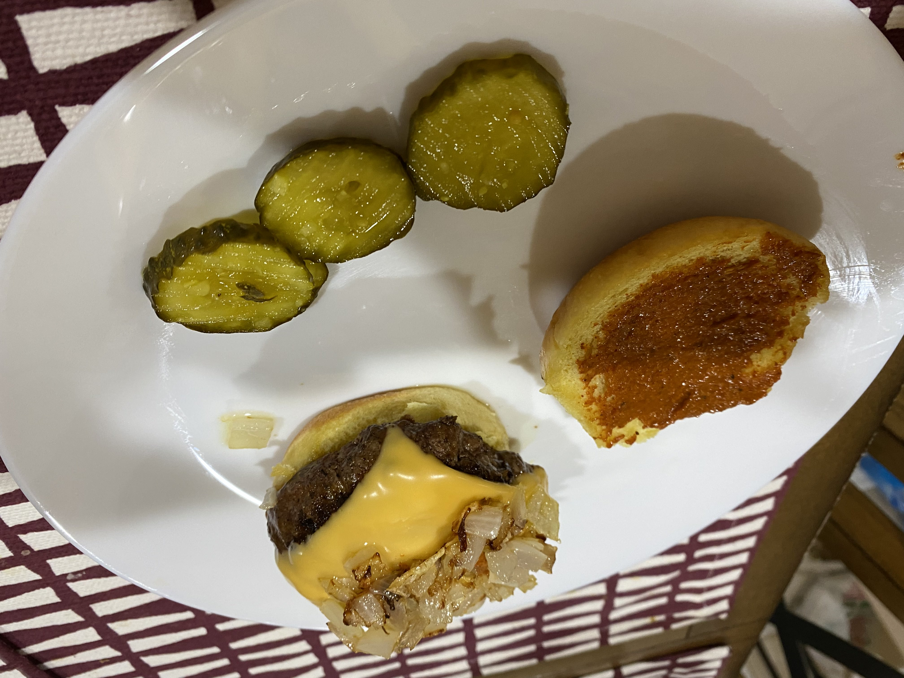
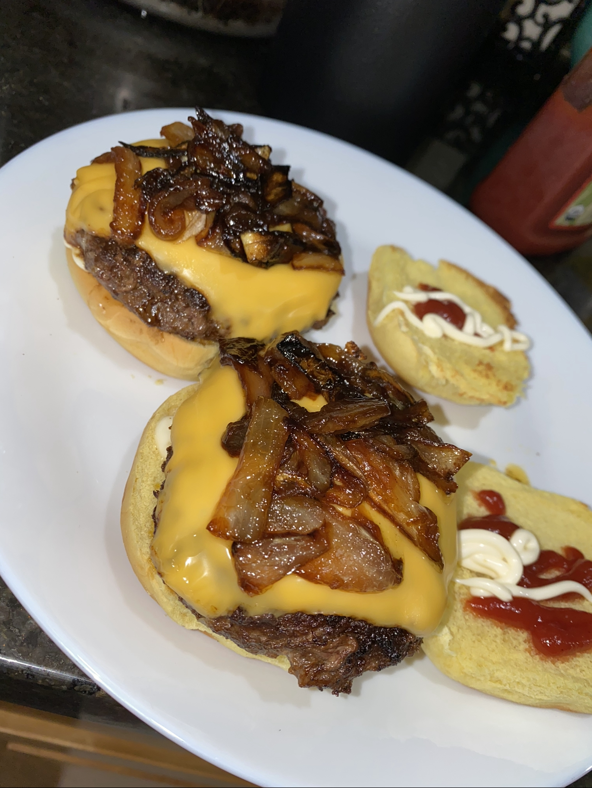

The Greatest Burger + Sauce Ever
 
Description
A very simple but delicious burger. A lot of people like to unnecessarily complicate things and load their burger with fourteen different things - the key is to have a few elements, but prepare them WELL (with a good sauce). Personally, I enjoy a slice of yellow American cheese, caramelized onions, and sometimes HALAL beef bacon on mine, with my very own red sauce which I will instruct you how to make (or a sauce of your choice).
Ingredients
The burger
- Potato buns or buns of choice
- 1 lb ground beef, or pre-made ground beef patties
- Half an onion
- 2 tbsp butter
- 1 tbsp olive oil
- 1 tbsp smoked paprika
- 2 tsp cayenne powder
- 2 tsp garlic powder
- 2 tsp onion powder
- 2 tsp himalayan salt
- 1 egg IF you do not have pre-made patties
- Halal beef bacon strips (optional)
Red sauce (optional but strongly recommended)
- All of the spices listed above
- 1 tbsp ketchup
- 1 tbsp mayo
- 0.5 tbsp dijon mustard
- Water as needed
- Add more spices as needed - main flavor is paprika
Steps
- If you already have pre-made hamburger patties, skip steps 1-4. Take your ground meat and put it in a bowl, then put half of your seasonings in.
- Crack your egg, but take ONLY the yolk and put it in the bowl with the ground meat (filter out the whites over the sink or in a bowl if you want to keep).
- Combine the ground meat with the yolk and the spices with your hands. Might want to use gloves, or, just wash your hands after. The yolk will help the patties maintain their shape, and incorporating the seasonings inside will give it much more flavor.
- Form and shape as many patties of your size preference as you can from the meat.
- If you are making sauteed or caramelized onions, you should start them now. Cut your onions pole-to-pole, use a skillet over low-medium heat and put on your olive oil. After a few minutes, throw in your onions with some salt and put a lid on. (tip: if they seem to be drying out when you're stirring, just toss in some water on the side and cover it up again)
- Time for the burger. Put a skillet over medium-high heat - when hot, put on oil or butter (I prefer the latter). When that is nice and melted, slap on your patty, season again, and cover with a lid. Let cook for ~3.5 minutes for medium-rare.
- While that side is cooking, time to make your sauce. Whisk all ingredients listed together in a bowl; add water until desired consistency is reached.
- Flip your burger after those 3.5 minutes have passed, and season the other side.
- Towards the end of the 3.5 minutes, flip it twice so the seasonings are fully incorporated. Turn the heat down to a low flame and put on your slice of cheese, covering with a lid.
- Spread a bit of butter on both sides of your buns, toasting them in another pan (or the same if you have space).
- Time to assemble! Bottom toasted bun, spread a good amount of red sauce on it. Then goes on the patty with the melted cheese on top, and then your caramelized onions. If you made beef bacon, put that on top as well, and then put your sauce on top. Top everything off with the crown, spread with even more sauce if you prefer.
- Enjoy!